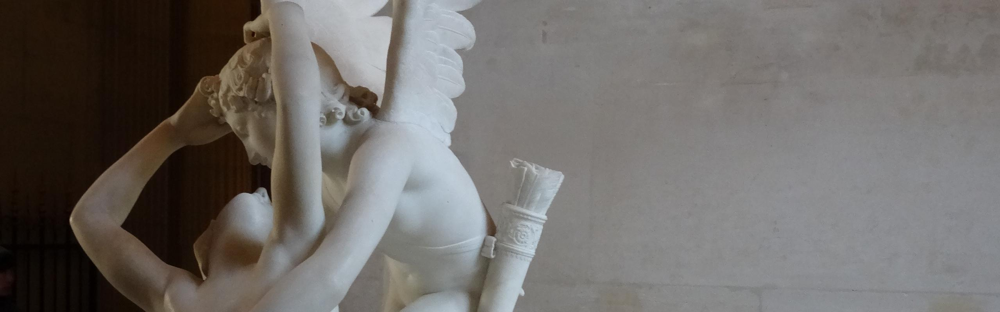

La historia de amor más popular en la mitología griega
La relación de Eros y Psique representaba la perfección del amor. Los dos personajes, jóvenes, bellos e inocentes simbolizan respectivamente el amor carnal y el amor filosófico (psique significa alma en griego), contrarios pero complementarios.
ORIGEN
La historia de Eros y Psique tiene una larga tradición como cuento popular del antiguo mundo grecorromano, mucho antes de que fuera escrita por primera vez en el siglo 2 DC, en la novela latina “El asno de oro” del poeta romano Apuleyo. La propia novela tiene el estilo picaresco romano, aunque Psique y Afrodita retienen su carácter griego, siendo Eros el único cuyo papel procede de su equivalente en el panteón romano.
INTRODUCCIÓN
El mito de Eros y Psique narra la lucha por el amor y la confianza entre Eros (o Cupido) y la princesa Psique. En la mitología, Eros representaba el poder sobrecogedor del amor, que por su fuerza puede también destruir. La palabra “psyche” puede ser traducida como «vida» y como «alma».
EL MITO DE EROS Y PSIQUE
Cuenta la historia que hace mucho tiempo existió un rey y una reina que tenían tres hijas. La menor, Psique, de tan deslumbrante belleza que era adorada por los humanos como una reencarnación de la diosa Afrodita. La diosa, celosa de la belleza de la mortal Psique, pues los hombres estaban abandonando sus altares para adorar en su lugar a una simple mujer, ordenó a su hijo Eros que intercediera para hacer que la joven se enamorase del hombre más horrendo y vil que pudiera existir. Por su parte, la belleza no había traído a Psique felicidad alguna. Los hombres la idolatraban de mil maneras, pero ninguno osaba acercársele ni pedir su mano. Los preocupados padres consultaron al Oráculo de Apolo para determinar qué le depararía el destino a su hija. Lejos de encontrar consuelo, el Oráculo predijo que Psique se casaría en la cumbre de la montaña con un monstruo de otro mundo. Psique aceptó amargamente su destino, y obedeciendo al Oráculo, sus padres la llevaron hasta la cima de la montaña seguidos por una larga procesión, donde la abandonaron en llanto para enfrentar a una muerte segura. Así la encontró el Céfiro (viento del Oeste), quien la elevó por sobre las montañas hasta depositarla en un valle colmado de flores. Al despertar, Psique se internó en el bosque cercano siguiendo el sonido del agua. Lo que encontró fue un hermoso palacio, de indescriptible lujo y belleza, y voces sin cuerpo susurrando que el palacio le pertenecía y que todos estaban allí para servirla. Esa noche, mientras yacía en la oscuridad de su nueva alcoba, un desconocido la visitó para hacerla su esposa. Su voz era suave y amable, pero él no se dejaba ver a la luz del día, lo cual despertaba la curiosidad de Psique que deseaba conocer su rostro.
Con el paso del tiempo Psique comenzó a sentir desasosiego, y sufría por sentirse sola. Extrañaba a sus hermanas, a quienes no veía desde hace tiempo y esto le causaba tristeza. Imploró entonces a su esposo que le permitiera recibir la visita de sus hermanas, pero éste le advirtió que ellas tratarían de incitar su curiosidad y la alentarían a intentar develar la identidad de su marido. Él le advertía una y otra vez que no se dejara persuadir por sus hipócritas hermanas, ya que el día en que ella viera su cara no lo volvería a ver y sería el día en que acabaría su felicidad. Finalmente, Eros cedió ante las intensas y apasionadas súplicas de Psique y pidió al viento Céfiro que acercara a las hermanas al palacio. Éstas, ante la visión de tanto lujo y belleza, ardieron de celos y envidia ante la buena fortuna que había tocado a su hermana. Secretamente, cada una de ellas comenzó a desmerecer lo que a ellas mismas les había tocado en suerte, sus ancianos maridos, sus mezquinas riquezas. Se fueron del palacio planeando cómo castigar a su hermana y en su retorno, la convencieron de que su marido era una enorme y monstruosa serpiente que esperaba al acecho para devorarla. Le sugirieron un detallado plan de acción, que se basaba en esperar que el sueño venciera a su marido para luego acercarse a él con una lámpara y un puñal y cortar su cabeza de serpiente.
Esa misma noche, Psique esperó a que su marido se durmiera junto a ella y encendió su lámpara para observarlo. A quien vio fue al más hermoso de los dioses, el mismísimo Eros. El cuchillo cayó de sus manos y mientras observaba extasiada esa imagen gloriosa, una gota de aceite proveniente de la lámpara cayó en el hombro de Eros. Éste despertó y librándose del abrazo y los lamentos de Psique, expresó su decepción por la traición de Psique a su amor. Le contó que él mismo desobedeció las órdenes de su propia madre al enamorarse de ella, pero que ya todo estaba arruinado. Y así desplegó sus alas y se fue. Psique comienza entonces una búsqueda desesperada por encontrar a Eros que culmina en su llegada al templo de Afrodita. Ésta, llena de ira y deseos de venganza, rasga las vestiduras de Psique y le encomienda tareas imposibles como clasificar miríadas de semillas distintas. Psique recibe ayuda de distintos dioses y fuerzas de la naturaleza que hacen posible que complete estos desafíos. Afrodita entonces inventa un nuevo castigo para Psique: ella debería internarse en mundo subterráneo en busca de Perséfone, reina de los infiernos, para rogarle que le diera un poco de su belleza dentro de un cofre. Sorteando varias dificultades, Psique cumple con la tarea y comienza su viaje de vuelta hacia la luz. En el camino, cae presa nuevamente de la curiosidad. Atraída por el deseo de agradarle más a su amado adornándose de belleza divina, abre el cofre e inmediatamente cae en un sueño mórbido. Mientras tanto Eros, recién recuperado de su herida, sale en búsqueda de su amada esposa para despertarla de su sueño. Luego se dirige a visitar a Zeus para rogar al Dios que tuviera compasión de Psique y la hiciera inmortal para que pudiera vivir con él en los cielos. Zeus se compadeció de Eros y apaciguó a Afrodita diciéndole que éste sería un casamiento digno de su hijo. Así es que ordenó el casamiento de Eros y Psique, que duraría para siempre.
DATOS CURIOSOS
- Psique era la diosa del alma en la antigua mitología griega y romana. Nacida como mujer mortal, su belleza rivalizaba con la de Afrodita
- Eros (Cupido entre los romanos), simboliza el deseo sensual, es el dios griego responsable de la atracción sexual, el amor y el sexo, venerado también como un dios de la fertilidad.
- la hija nacida de ambos llevaría el nombre “Hedoné”, que significa Placer.